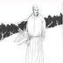
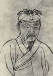

元曲代表人物---元曲四大家
关汉卿
关汉卿(约1220年--1300年)，元代杂剧作家。是中国古代戏曲创作的代表人物，“元曲四大家”之首。号已斋(一作一斋)、已斋叟。
汉族，解州人(今山西省运城)，与马致远、郑光祖、白朴并称为“元曲四大家”。
以杂剧的成就最大，一生写了60多种，今存18种，最著名的有《窦娥冤》;关汉卿也写了不少历史剧，如:《单刀会》、《单鞭夺槊》、《西蜀梦》等;散曲今在小令40多首、套数10多首。
关汉卿塑造的“我却是蒸不烂、煮不熟、捶不匾、炒不爆、响珰珰一粒铜豌豆”(《不伏老〉)的形象也广为人称，被誉“曲家圣人”
马致远
马致远(约1250一约1321以后)，字千里，号东篱，(一说名不详，字致远，晚号“东篱”)，汉族，元代戏曲作家，元大都(今北京)人，原籍河北省东光县马祠堂村。
与关汉卿、郑光祖、自朴并称“元曲四大家。” 马致远是元代著名杂剧作家，大都(现今北京)人。因《天净沙·秋思》而被称为秋思之祖。
所作杂剧今知有15种，《汉宫秋》是其代表作;散曲120多首，有辑本《东乐府》
郑光祖

郑光祖生于元世祖至元初年(即公元1264年)[1]，字德辉，汉族，元代著名的杂剧家和散曲家，平阳襄陵(今山西临汾市襄汾县)人。
郑光祖从小就受到戏剧艺术的需陶，青年时期置身于杂剧活动，享有盛誉但他的主要活动在南方(杭州)，成为南方戏剧圈中的巨。所作杂剧在当时“名闻天下，声振闺阁”。
元·周德清在《中原音韵》中激赏郑光祖的文词，将他与关汉卿、马致远、白朴并列，后人合称为“元曲四大家”。
白朴

白朴(1226一约1306)，原名恒，字仁甫，后改名朴，字太素，号兰谷。汉族，祖籍陕州(今山西河曲)，后徙居真定(今河北正定县)，晚岁寓居金陵(今南京市)，终身未仕。
他是元代著名的杂剧作家，与关汉卿、马致远、郑光祖并称为元曲四大作家。代表作主要有《唐明皇秋夜梧桐雨》、《裴少俊墙头马上》、《董秀英花月东墙记》等。